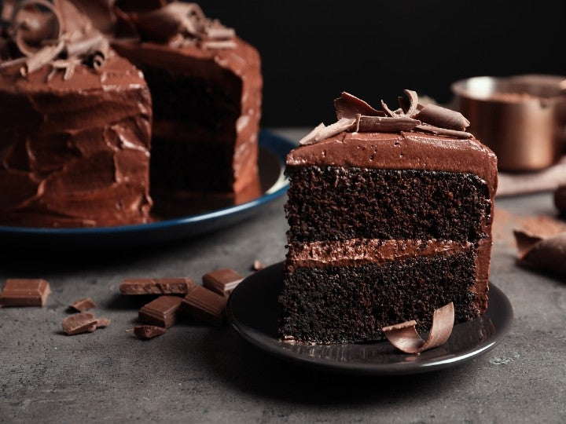
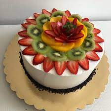

| Pastel de Tres Leches |
|
Bizcocho esponjoso bañado en una mezcla de leche condensada, evaporada y crema |
Cumpleaños, celebraciones familiares. |
| Pastel de Chocolate |
 |
Rico, denso y con intenso sabor a cacao. Puede tener cobertura de ganache o buttercream. |
Amantes del chocolate y celebraciones elegantes. |
| Pastel de Frutas con Crema Chantilly |
 |
Bizcocho ligero con crema chantilly y frutas frescas (fresas, kiwi, mango, etc.). |
Primavera, verano, baby showers o bodas. |
| Cheesecake |
 |
Base de galleta con mezcla de queso crema, horneado o refrigerado. |
Postres individuales o estilo gourmet. |